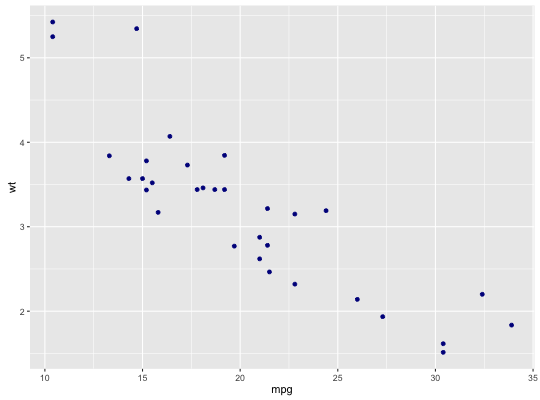

update_geom_defaults(geom, new)update_stat_defaults(stat, new)
Modify geom/stat aesthetic defaults for future plots
update_geom_defaults("point", list(colour = "darkblue")) ggplot(mtcars, aes(mpg, wt)) + geom_point()
update_geom_defaults("point", list(colour = "black"))